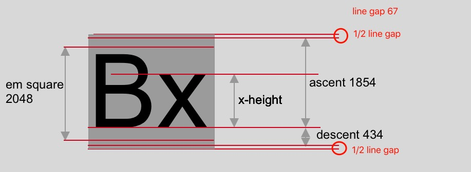
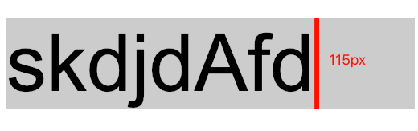
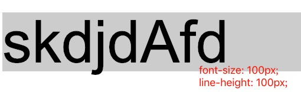

<!DOCTYPE html>
<html lang="en">
<head><meta name="generator" content="Hexo 3.8.0">
  <meta charset="utf-8">
  
  
  
    <meta name="description" content="forever young">
  
  <meta name="viewport" content="width=device-width, initial-scale=1, maximum-scale=1">
  <title>
    css line-height &amp; vertical-align |
    
    xqyoung&#39;s blog</title>
  
    <link rel="shortcut icon" href="/favicon.ico">
  
  <link rel="stylesheet" href="/css/style.css">
  
    <link rel="stylesheet" href="/fancybox/jquery.fancybox.min.css">
  
  <script src="/js/pace.min.js"></script>
</head>
</html>
<body>
<main class="content">
  <section class="outer">
  <article id="post-line-height" class="article article-type-post" itemscope="" itemprop="blogPost" data-scroll-reveal="">

    <div class="article-inner">
        
            <header class="article-header">
                
  
    <h1 class="article-title" itemprop="name">
      css line-height &amp; vertical-align
    </h1>
  
  


            </header>
            

                
                    <div class="article-meta">
                        <a href="/2019/01/05/line-height/" class="article-date">
  <time datetime="2019-01-05T21:48:19.000Z" itemprop="datePublished">2019-01-05</time>
</a>
                            
  <div class="article-category">
    <a class="article-category-link" href="/categories/css-基础/">css 基础</a>
  </div>

                    </div>
                    

                        
                            
    <div class="tocbot"></div>


                                

                                    <div class="article-entry" itemprop="articleBody">
                                        


                                            

                                                
                                                                    <p>写样式到时候经常遇到单行文字垂直居中，对于高度已知的块级元素，我们知道一种简单写法：</p>
<figure class="highlight css"><table><tr><td class="gutter"><pre><span class="line">1</span><br><span class="line">2</span><br></pre></td><td class="code"><pre><span class="line"><span class="selector-tag">line-height</span>: 30<span class="selector-tag">px</span>;</span><br><span class="line"><span class="selector-tag">height</span>: 30<span class="selector-tag">px</span>;</span><br></pre></td></tr></table></figure>
<p>设定行高，到底改变了什么？</p>
<h3 id="字体的度量"><a href="#字体的度量" class="headerlink" title="字体的度量"></a>字体的度量</h3><p>先从英文字母开始。刚开始学ABCD的时候，我们都知道练习本上面有四条线。</p>
<p></p>
<p>我们知道一些字母，比如小写的 a、e，是完全写在中间两条线之间的。写大写字母的时候，比如 A，B，它们的最顶部不会顶到第一条线，那样就很难看了——老师一般是这么说的，但是实际上，AB这样的大写字母，本身就不“顶天”。</p>
<p>这里我们先明确两个概念：</p>
<ul>
<li><code>Capital Height</code> 大写字母高度</li>
<li><code>x-height</code> 字母 x 的高度</li>
</ul>
<p>字体的高度和具体字符的高度不是一个概念，英文练习本上面，英文字符大多有上下留白。</p>
<p>现在又有一个问题，字体的高度是怎么算的？我们平时用 px 去设定 font-size ，对不同字体的结果一样吗？</p>
<hr>
<p>传统金属字块，我们可以看到一个字符是摆在一个方格里面的。同种字体，所有字符的方格是一样的，不同字体的区别在于方格的大小，以及字符在方格中上下“留白”大小。</p>
<p></p>
<p>我们来看字体的度量</p>
<ul>
<li><p>字体定义其 <a href="https://designwithfontforge.com/en-US/The_EM_Square.html" target="_blank" rel="noopener">em square</a>，也称为 “em size” 或 “UPM” ，是字符所处的容器。对于 OpenType 字体，这个值通常是 1000 ；对于 TrueType 字体，这个值是 2 的指数，通常设定为 1024 或 2048 。</p>
</li>
<li><p>字体块对外高度由 ascender、descender 和 line gap决定。</p>
</li>
<li>具体字符由 capital height、x-height 决定</li>
</ul>
<p>以 Arial 字体为例，以下是它的参数。</p>
<p></p>
<p>设定 <code>font-size: 100px</code> ，<code>&lt;p&gt;&lt;/p&gt;</code>块最终高度是多少？</p>
<figure class="highlight html"><table><tr><td class="gutter"><pre><span class="line">1</span><br></pre></td><td class="code"><pre><span class="line"><span class="tag">&lt;<span class="name">p</span>&gt;</span>skdjdAfd<span class="tag">&lt;/<span class="name">p</span>&gt;</span></span><br></pre></td></tr></table></figure>
<p></p>
<p>结果是 115px ，也就是说 Arial 字体 line-height normal 值为 1.15。计算为 <code>(ascent + descent + line gap)/em-square</code> ，line gap（线间距）不是所有字体都有。</p>
<p>ascent+descent区域，我们称为内容区域（content-area）</p>
<p>没有人为设定字体行高的时候，content-area + line-gap（有些字体为 0 ） 为 line-height。</p>
<p>到这里可以确定，开篇提到的那种居中方法，居中的其实是 content-area 。</p>
<h3 id="line-box"><a href="#line-box" class="headerlink" title="line-box"></a>line-box</h3><p>当 <code>&lt;p&gt;</code> 元素呈现在屏幕上，它根据它的宽度可以有很多线。每一行是由一个或多个行内元素（HTML标签元素或匿名内联元素文本内容）组成，专业术语称为行盒（line-box）。line-box的高度是基于它的子元素高度的。浏览器为每个行内元素计算的高度都是line-box（子元素的最高点到最低点）。因此line-box的总高度足以包含所有子元素（默认情况下）。</p>
<h3 id="line-height-的值"><a href="#line-height-的值" class="headerlink" title="line-height 的值"></a>line-height 的值</h3><p>line-height normal 的值，依据不同字体去计算，如果是数字或百分比，相对字体的大小计算。改变 line-height 可能是一件危险的事，所有字体都有自己的安全行高，如果 line-height 过小，字符可能超出 line-box 。</p>
<p></p>
<blockquote>
<p>参考<br><a href="https://www.w3cplus.com/css/css-font-metrics-line-height-and-vertical-align.html" target="_blank" rel="noopener">深入了解CSS字体度量，行高和vertical-align</a></p>
</blockquote>

                                                                        
                                    </div>
                                    <footer class="article-footer">
                                        <a data-url="http://www.xqyoung.com/2019/01/05/line-height/" data-id="ckciqo6vv0010upjb1sn71wsj" class="article-share-link">
                                            Share
                                        </a>
                                        
  <ul class="article-tag-list"><li class="article-tag-list-item"><a class="article-tag-list-link" href="/tags/css/">css</a></li></ul>

                                    </footer>

    </div>

    
        
  <nav class="article-nav">
    
      <a href="/2019/07/21/js-prototype-pollution/" class="article-nav-link">
        <strong class="article-nav-caption">Newer</strong>
        <div class="article-nav-title">
          
            js-prototype-pollution
          
        </div>
      </a>
    
    
      <a href="/2018/11/25/websocket-beginner/" class="article-nav-link">
        <strong class="article-nav-caption">Older</strong>
        <div class="article-nav-title">初识 WebSocket</div>
      </a>
    
  </nav>


            

                
                    
                        
                            

</article>
</section>
  <footer class="footer">
  <div class="outer">
    <div class="float-right">
      <ul class="list-inline">
  
    <li><i class="fe fe-smile-alt"></i> <span id="busuanzi_value_site_uv"></span></li>
  
    <li><i class="fe fe-bookmark"></i> <span id="busuanzi_value_page_pv"></span></li>
  
</ul>
    </div>
    <ul class="list-inline">
      <li>&copy; 2020 xqyoung&#39;s blog</li>
      <li>Powered by <a href="http://hexo.io/" target="_blank">Hexo</a></li>
      <li>Theme  <a href="https://github.com/zhwangart/hexo-theme-ocean">Ocean</a></li>
    </ul>
  </div>
</footer>

</main>
<aside class="sidebar">
  <button class="navbar-toggle"></button>
<nav class="navbar">
  
    <div class="logo">
      <a href="/"></a>
    </div>
  
  <ul class="nav nav-main">
    
      <li class="nav-item">
        <a class="nav-item-link" href="/">Home</a>
      </li>
    
      <li class="nav-item">
        <a class="nav-item-link" href="/archives">Archives</a>
      </li>
    
      <li class="nav-item">
        <a class="nav-item-link" href="/gallery">Gallery</a>
      </li>
    
      <li class="nav-item">
        <a class="nav-item-link" href="/about">About</a>
      </li>
    
    <li class="nav-item">
      <a class="nav-item-link nav-item-search" title="Search">
        <i class="fe fe-search"></i>
        Search
      </a>
    </li>
  </ul>
</nav>
<nav class="navbar navbar-bottom">
  <ul class="nav">
    <li class="nav-item">
      <div class="totop" id="totop">
  <i class="fe fe-rocket"></i>
</div>
    </li>
    <li class="nav-item">
      
        <a class="nav-item-link" target="_blank" href="/atom.xml" title="RSS Feed">
          <i class="fe fe-feed"></i>
        </a>
      
    </li>
  </ul>
</nav>
<div class="search-form-wrap">
  <div class="local-search local-search-plugin">
  <input type="search" id="local-search-input" class="local-search-input" placeholder="Search...">
  <div id="local-search-result" class="local-search-result"></div>
</div>
</div>
</aside>
<script src="/js/jquery-2.0.3.min.js"></script>
<script src="/js/jquery.justifiedGallery.min.js"></script>
<script src="/js/lazyload.min.js"></script>
<script src="/js/busuanzi-2.3.pure.min.js"></script>

  <script src="/fancybox/jquery.fancybox.min.js"></script>


  <script src="/js/tocbot.min.js"></script>
  <script>
    // Tocbot_v4.7.0  http://tscanlin.github.io/tocbot/
    tocbot.init({
      tocSelector: '.tocbot',
      contentSelector: '.article-entry',
      headingSelector: 'h1, h2, h3, h4, h5, h6',
      hasInnerContainers: true,
      scrollSmooth: true,
      positionFixedSelector: '.tocbot',
      positionFixedClass: 'is-position-fixed',
      fixedSidebarOffset: 'auto',
    });
  </script>


<script src="/js/ocean.js"></script>

</body>
</html>